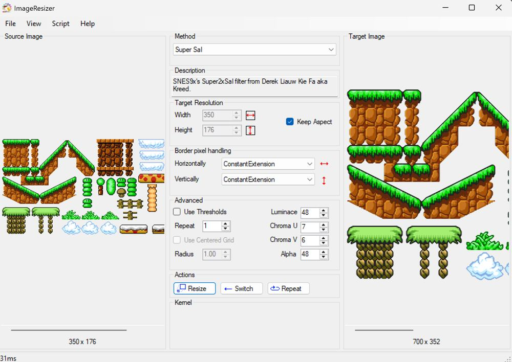
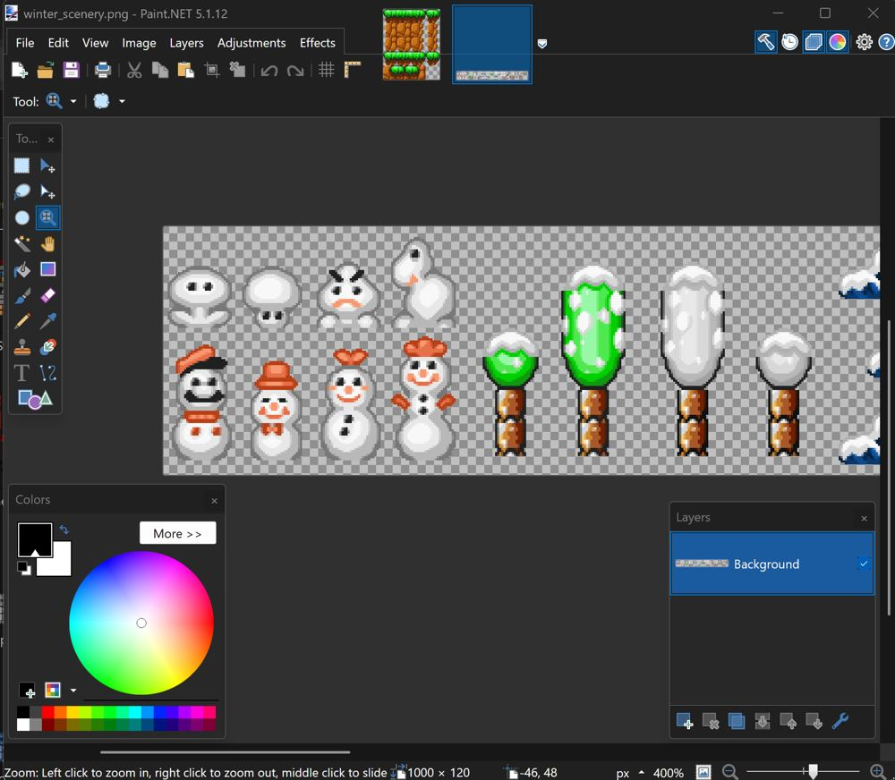
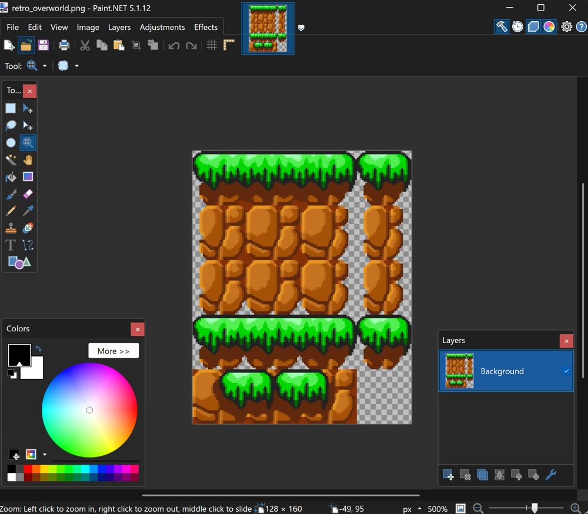

Edición de gráficas
Un proceso esencial para desarrollar niveles es tener assets para usar. Edito gráficas en pixel art 2D para adaptarlas a un estilo específico, con edición y organización para implementarlas de forma adecuada en Godot.
Herramientas: Paint.NET e Image Resizer.



Se aplica en el Flujo de trabajo: tiles y elementos de escenario ›